セットアップ手順を簡単にするためこのファイルが入ったフォルダ(setupwsl2)はデスクトップに配置し、フォルダ名をsetupwsl2としてください
(powershellやwsl2に慣れている人はコマンドのパスをこのファイルが入ったフォルダのパスに置き換えて実行してもらってもよいです)
以下の画像の様にsetupwsl2フォルダがデスクトップにあればOKです
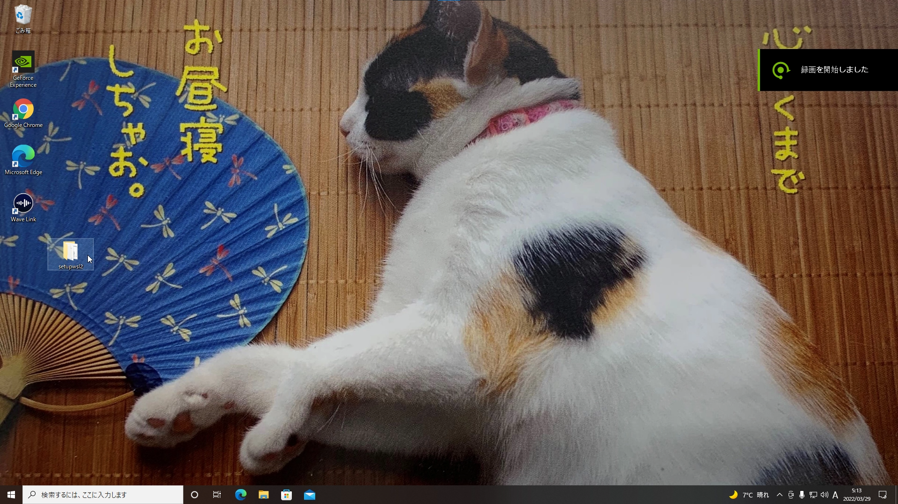
必要なファイルはスクリプトの最初に自動的に確認され、ファイルが足りない場合はスクリプトは途中で終了し実行されないように作っています
(カスタムを行いたい方へ)
必要のないスクリプトがあるなどカスタムをしたい場合は./windowssetup.ps1の# Check whether scripts are existのブロックのコードを無効化、もしくは必要ないスクリプトのみファイル存在チェックを外すなどして対応してください
インターネットとの通信がかなりあるので高速で安定なネットワーク(できれば有線)環境下で実行してください
ノートパソコンの場合充電の残量にも注意してください(基本的には充電しながらのセットアップを推奨します)
powershellを管理者で実行
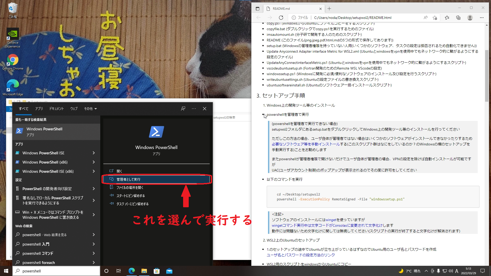
(powershellを管理者で実行できない場合)
setupwsl2フォルダにあるsetup.batをダブルクリックしてWindows上の開発ツール等のインストールを行ってくださいただしこの方法の場合、ユーザ自体が管理者ではない場合はいくつかのソフトウェアがインストールできなかったりするため
必要なソフトウェア等を手動インストールする(このスクリプト群はなにをしているのか？のWindowsの欄のセットアップを手動実行する)ことをお勧めしますまたpowershellが管理者権限で開けないだけでユーザ自体が管理者の場合、VPNの設定を除けば自動インストールが可能ですが
UAC(ユーザアカウント制御)のポップアップが表示されるのでその度に許可をしてください
以下のコマンドを実行(WSL2の機能の有効化とWindowsのインストール系スクリプト以外の処理をします)
cd ~/Desktop/setupwsl2/scripts
powershell -ExecutionPolicy RemoteSigned -File "initialize_windows_settings.ps1"
一旦再起動してから再度powershellを管理者権限で開いて以下を実行(各種ソフトウェアのインストールをします)
cd ~/Desktop/setupwsl2/scripts
powershell -ExecutionPolicy RemoteSigned -File "windowssetup.ps1"
<注記>
ソフトウェアのインストールにはwingetを使っていますが
wingetコマンド実行中は文字コードがConsolasに変更されて文字化けします
動作には問題ないため文字化けに関しては無視してください(スクリプトの実行が終了すると文字化けが解消されます)
↓文字化けの様子
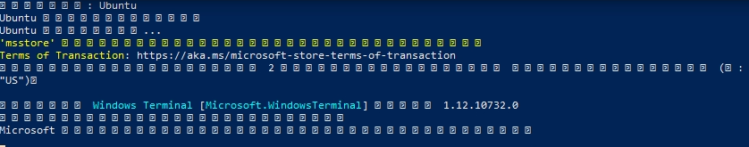
<UbuntuがうまくインストールできずにUbuntuが起動してこない場合>
まずはWindowsキーを押して、Ubuntuで検索してアプリがヒットしないことを確認してください
アプリがヒットしない場合は、管理者権限でpowershellを立ち上げて
wsl --install
wsl --set-default-version 2
wsl --install -d Ubuntu
wsl --set-default Ubuntu
を1行ずつ実行してどんなエラーが出るかを確認してください
エラーを確認したらMicrosoft公式のWSLインストールに関するトラブルシューティングのリンクを参照して
該当の項目を探して対応してください
よくあるインストールできない理由は、BIOSで仮想化が無効化されているパターンです
BIOS設定の変更方法はCPUやメーカーによって違うのでIntelで検索またはAMDで検索して調べるか、PC本体のマニュアルを参照してください
1.のセットアップの途中でUbuntuが立ち上がっているはずなのでUbuntu用のユーザ名とパスワードを作成
ユーザ名とパスワードの設定方法のリンク
ユーザを正しく作成できたら以下のような画面になっているはずです
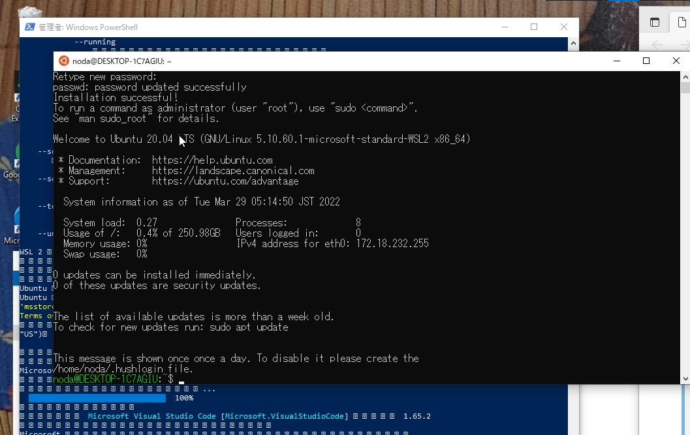
<ユーザ作成がうまくいかなかった場合>
途中でUbuntuが強制終了するなどしてユーザが正常に作成出来なかった場合は
Windowsキーを押して、Ubuntuで検索してUbuntuを立ち上げると以下のようなrootという文字列が表示されるはずです
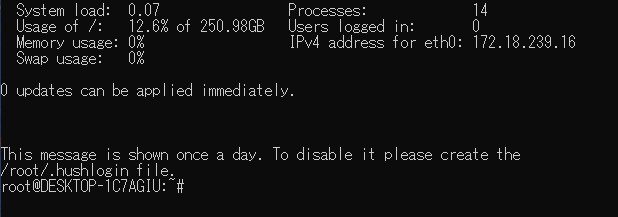
rootという文字列が表示されてこない場合
この場合は、念のため一度セットアップをやり直しましょう
Ubuntuのリセット方法を参考にしてUbuntuをリセットし、Windowsを再起動した後、セットアップ手順からやり直してくださいrootという文字列が表示された場合
Ubuntuで
を実行するとユーザを作成できます
このとき2回のパスワード入力後にもいくつかの質問項目が表示され、答えるように促されますが無視して何も入力せずEnterキー連打で構いません
正しく実行できると以下のような表示になります
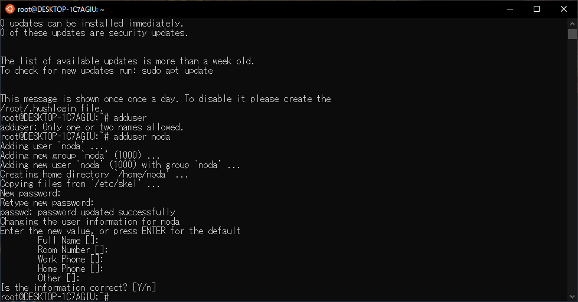
次に以下のコマンドを実行します正しく実行できたら以下のような表示になります
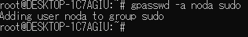
次にpowershellを開いて以下のコマンドを実行します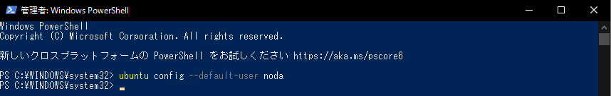Ubuntuを閉じて再度起動し以下の画像のように作ったユーザ名が表示されれば設定は完了です
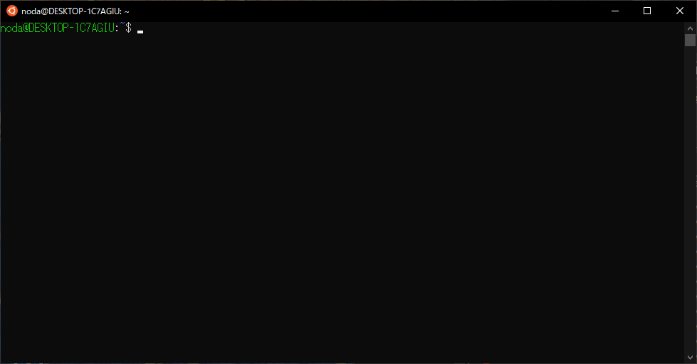
正しく実行できたら次の項目に進んでください
WSL2用のスクリプトをwindowsからUbuntuにコピー
setupwsl2フォルダの
copyfile.bat(設定によりcopyfileというファイル名だけ表示されている場合もあります)
をダブルクリックしてスクリプトを実行してください
正しく実行出来た場合、スクリプト実行後Ubuntuでlsと入力し、Enterを押すと以下の画像のように4つのファイルがあるはずです
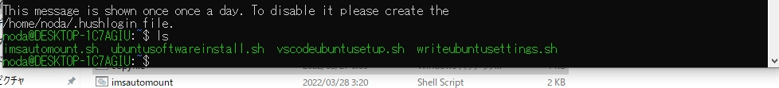
WSL2用のスクリプトを実行
$HOME/writeubuntusettings.sh && $HOME/ubuntusoftwareinstall.sh
実行時にパスワードを聞かれるので先ほど設定したパスワードを入力してください
<途中でUbuntuが強制終了した場合>
スクリプト実行中にパッケージのエラー等によりUbuntuが強制終了する場合があります
その場合は$HOME/ubuntusoftwareinstall.shを実行しなおしてください(実行コマンド)
実行しなおしてもスクリプトの最終出力である
WSL2 ubuntu setting write script ended. Please restrat WSL2.
が表示されない場合は、画面に解決方法が書いてあるはずなので
そのコマンドを実行してから再度$HOME/ubuntusoftwareinstall.shを実行しなおしてください
↓正常にセットアップが終了した際の表示
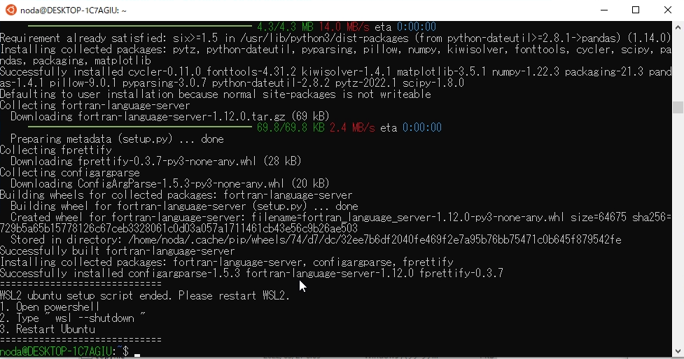
WSLを再起動
Powershellを起動してWSLをシャットダウン
wsl --shutdown
windows keyからUbuntuを検索して起動
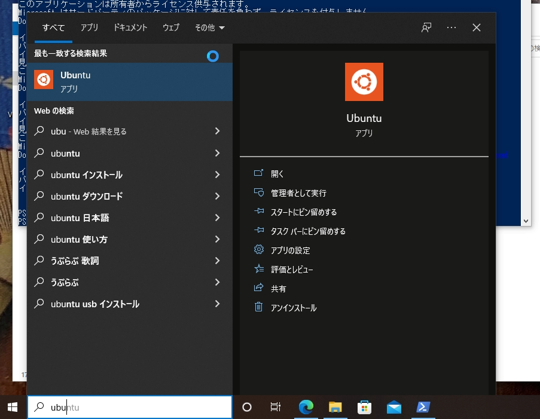
VScode用のスクリプトを実行
$HOME/vscodeubuntusetup.sh
VScodeが起動してくるのでMaterial Icon Themeを有効化
Material Icon ThemeのOne-click activationを参考にして有効化してください
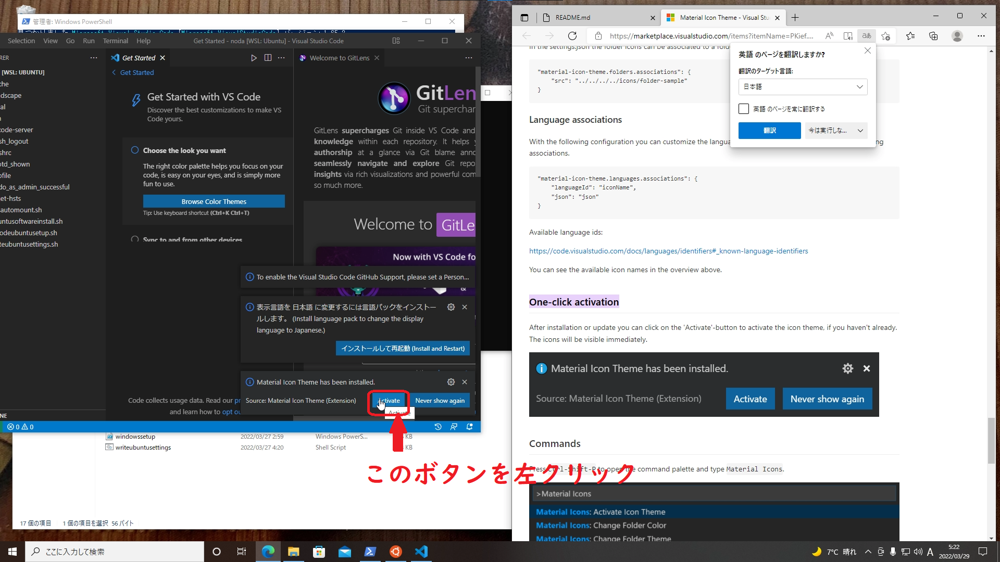
ここまでで自動実行に時間がかかるスクリプトは終了なので、initialize_windows_settings.ps1内で変更していた電源プラン(スリープしないようにする設定)をデフォルトに戻します
powershellを管理者権限で開いて以下のコマンドを実行します
cd ~/Desktop/setupwsl2/scripts
powershell -ExecutionPolicy RemoteSigned -File "restore_power_settings.ps1"
正常にスクリプトが終了しない場合は電源プランの設定方法のリンクを参照して電源プランを"do_not_turn_off"以外にしてください(オススメは"バランス"です)
計算機へのログインのためのユーザを作成済みの場合、以下の設定を行ってください
(公開鍵ログインの場合)秘密鍵を$HOME/.ssh/にコピー
(例) C:\Users\noda\.ssh\ims_rsa という秘密鍵ファイルを持っている場合、Ubuntuで以下のコマンドを実行
cp /mnt/c/Users/noda/.ssh/ims_rsa $HOME/.ssh/
権限の変更
Ubuntuで以下のコマンドを実行
chmod 600 $HOME/.ssh/*
$HOME/.ssh/configの編集
Ubuntuで以下のコマンドを実行
nano $HOME/.ssh/config
こんな感じの画面が表示されるはずです
矢印キーで移動,ctrl+sで上書き保存,ctrl+xでnanoを閉じられます
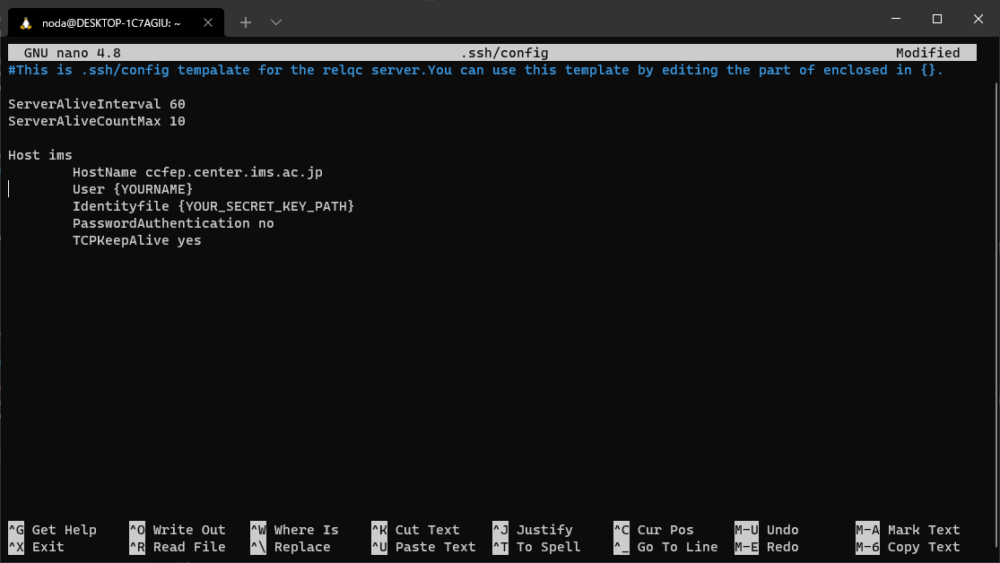
ssh設定のテンプレートファイルが開かれるので編集してください
<$HOME/.ssh/configのテンプレート>
ServerAliveInterval 60
ServerAliveCountMax 10
Host ims
HostName ccfep.center.ims.ac.jp
User {USER_NAME}
IdentityFile {IdentityFilePath}
ForwardX11 yes
ForwardX11Trusted yes
ここまでの設定を行うとUbuntuで
ssh ims
などと打ち込むだけでsshサーバにログイン可能になります
scpコマンドなどもimsやrelqc01などのHost名で指定できるのでコマンドの簡略化につながります
!!!!!!!!!!! 注意 !!!!!!!!!!!
この手順を行うと自動マウントの設定が行われるため
Ubuntuの起動とsource $HOME/.profileの実行完了に時間がかかるようになります
従って分子研でプログラム開発を行っていて、かつVScodeを使って編集したい場合のみ以下の手順を実行してください
以下のコマンドをUbuntuで実行してください
実行時、分子研のユーザ名の入力を求めるように作ってあります
聞かれたら分子研のユーザ名を入力してください
source $HOME/.profile を実行するか、Ubuntuの再起動後に設定が適用されます
(免責事項 : ユーザデータの取得が目的ではなく、ディレクトリの作成と自動マウントコマンドの作成にユーザ名を使用しています。ユーザデータをサーバ等に送信はしていません。スクリプトの内容は cat $HOME/imsautomount.sh ですべて確認できます。)
後から自動マウントをしないように変更したい場合、まずUbuntuでを実行した後(Ubuntuのパスワードの入力が求められる場合があります) $HOME/.profileの以下の内容を削除してください
source $HOME/.profile を実行するか、Ubuntuの再起動後に設定が適用されます
以下のリンクにアクセスしてCisco anyconnectをダウンロード
https://www2.media.hiroshima-u.ac.jp/sso/vpngw/anyconnect-win-4.10.05085-core-vpn-predeploy-k9.msi
ダウンロードしたファイルをダブルクリック、ダウンロード
詳しい使い方は https://www.media.hiroshima-u.ac.jp/services/hinet/vpngw/#setting を参照してください
以下のことを自動実行しています